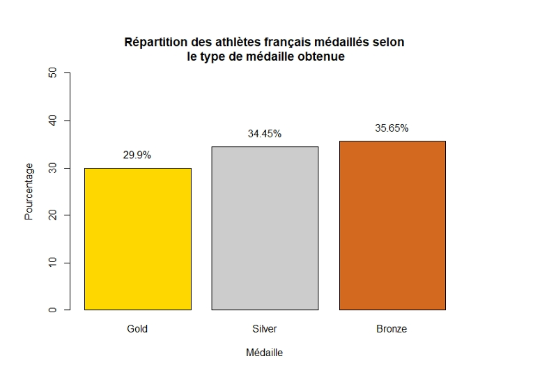

Analyse sur les jeux Olympiques
Ce projet visait à réaliser une analyse exploratoire de données centrée sur les Jeux Olympiques d’été, en mettant particulièrement l’accent sur la participation française. L’objectif était de dégager des tendances, des performances et des statistiques clés à partir d’un jeu de données fourni par Kaggle, intitulé « athlete_events.csv ».
Le projet Analyse sur les jeux Olympiques, réalisé en groupe de quatre, portait sur l’analyse des performances
françaises aux Jeux Olympiques d’été à partir du fichier athlete_events.csv (Kaggle).
J’ai joué un rôle clé dans la préparation et la structuration des données, en
assurant un nettoyage rigoureux et une sélection pertinente des variables. J’ai conçu un
dataframe optimisé pour faciliter l’analyse statistique, puis j’ai mené une
étude approfondie sur la répartition des médailles françaises par type, sport
et genre. Ce travail a mobilisé des compétences solides en statistique, visualisation et
programmation avec RStudio. Les livrables comprenaient un rapport
technique en LaTeX et une présentation orale professionnelle via Marp,
illustrant la rigueur et la qualité de notre démarche analytique.
Le graphique ci-dessous illustre le travail réalisé.

Ce projet a été une excellente opportunité pour moi de me familiariser avec le langage
R et son environnement de développement RStudio.
En parallèle, j’ai renforcé mes compétences en travail collaboratif.
lubridate.